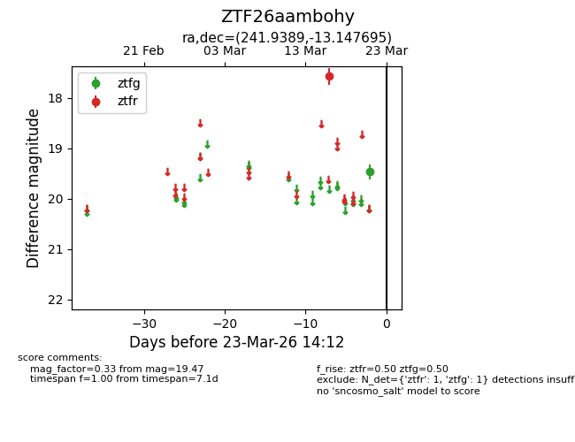
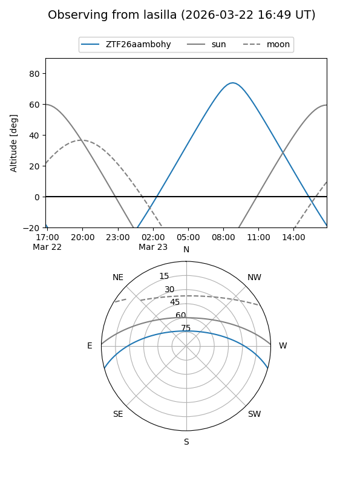
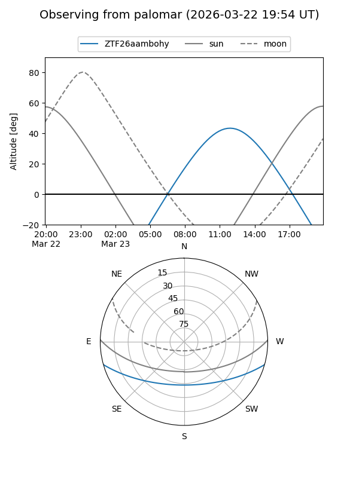

ZTF26aambohy
Target ZTF26aambohy at 2026-03-23 14:14
Aliases and brokers:
FINK: link
Lasair: link
ALeRCE: link
alt names
ZTF26aambohy (ztf,fink_ztf)
Coordinates:
equatorial (ra, dec) = 241.9389,-13.14770
equatorial (HMS+DMS) = 16:07:45.33,-13:08:51.70
galactic (l, b) = (359.0942,+27.64251)
Flags:
Photometry:
last ztfg=19.47, ztfr=17.57
1 ztfg, 1 ztfr detections
Lightcurve

Visibility


Additional plots